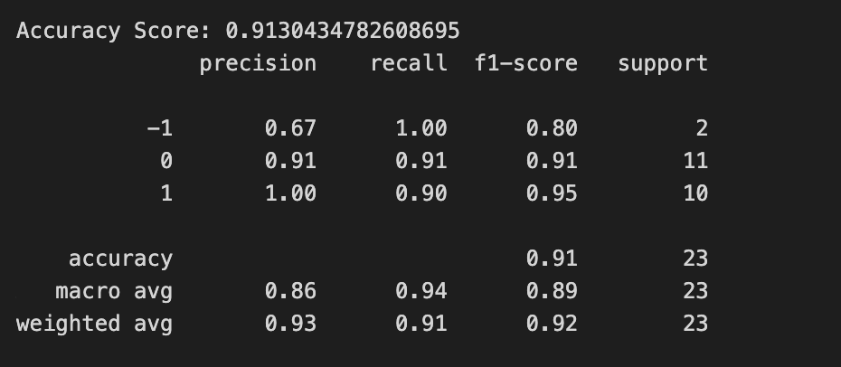
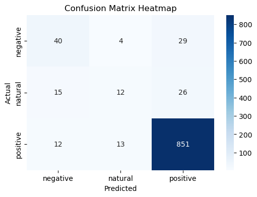

Conclusion
Project Goal
The goal for this project is identify whether Apple products are still popular in the market, and find out public’s reaction to Apples’ new products. Also, I want to find out what kind of of quality of a mobile phone should have that will attract the public to buy. Thus, I should train some models that can predict a product’s populariy based on its functions, so when iPhone’s new generation came out, I can use thid model to predict its popularity.
Data Analysis Result
Data Collection
In this part, I collected 3 text datasets and 2 record datasets by using API, Web Crawling, downloading methods by using Python and R. Most text datasets are related to the public’s reviews and comments towards Apple products,and one of the record datasets are related to Apple stock, and another is related to the mobile phones’ function rating. All the datasets can help me to dig into this research topic.
Here’s some sample raw datasets:
raw text data
raw record data 
Data clean
In this part, I did data cleanning process for the datasets that I needed for preparing for future data analysis and model training. For the record data, I did fill null values, remove duplicates, handling outliers, convert data types, etc cleaning process. For the text data, I did remove stop words, remove special characters and punctuation, tokenization, stemming and lemmatization, remove white spaces, etc cleaning process.
Here’s some sample cleaned datasets:
cleaned text data
cleaned record data
EDA
In this part, I did some exploratory data analysis for the cleaned datasets for better knowing the datasets. I used visualization tools to help the audience know more about my project, which will include text clouds, statistic distribution, correlation heatmap, etc.
Here are some examples: 
Here’s some key words that appeared most frequently in the news dataset that I collected. As we can see, most words are natural and positive towards apple products.
From the Apple stock’s plot we can see from the past year, the stock price is in the increasing trend, which means more poeple are willing to buy Apple’s stock, which means Apple is still popular in the market.

As shown in the pie chart, in the Top 50 ranking phones, 20% are apples. Which means there are 10 iphones are ranked in top50. This also shows Apple is still one of the most popular brands in the market.
Clustering
In this part, I used K-means, DBSAN, Hierarchical clustering methods to clustered the mobile phone ratings dataset. Based on the hyperparameter turning, here’s the optimal clusters results: K-means: 2 DBSCAN : 4 Agglomerative Hierarchy: 2 Meanshift : 4 Birch : 3
Based on the analysis process, I think Agglomerative Hierarchy would the best method for this dataset, and the optimal clustering would be 2.
Dimensionality Reduction
In this part, I used PCA and t-SNE method to reduce the dimension for better analyzing the mobile phone ratings dataset. Based on the visualization result, I believe PCA would be a better method for this dataset.
As shown in the graph, the red line intersect the blue line at number of comonents around = 4. So, when the number of compnents is larger than 4 which is 5, we can make 95% variance expliained. There for we should reduce the number of components to 5.
Model Training
Decision Tree & Random Forest
In this part, I used decision tree and random forest to do the classification. I training the model based on the mobile phone prices, the function ratings of the mobile phones to predict the public’s the buying intent to the products. - Decision Tree The optimal levels are 3

And the final test showed the model performed well: ACCURACY: 0.967741935483871 NEGATIVE RECALL (Y=0): 1.0 NEGATIVE PRECISION (Y=0): 0.9375 POSITIVE RECALL (Y=1): 0.9375 POSITIVE PRECISION (Y=1): 1.0
- Random Forest The result for the random forst is similar to the decision tree, and I believe the decision tree is better predict the model. More content related to random forest can be found in the Decision Tree Tab.
Naive Bayes
In this part, I used Naive Bayes algorithmn predict the lebels for the mobile phone ratings dataset and also the news text dataset. I used feature selection of variance thredhold method with hyperparameter tuning for better training the model.
Final result showed the naive bayes predicted my record dataset well. 

Final result also showed the naive bayes predicted my text dataset well.

More analysis can find in the Naive Bayes tab.
Questions & Answers
Based on the research above, I belive I can explain all the questions listed in the introduction well:
Can customer reviews and sentiment analysis on social media reflect the public’s reaction to the products?
Yes, based on the sentiment analysis and key words extraction, we can see the public’s reaction easily.
How does Apple’s stock performed? Apple stock performed well in the past year.
What are the trends in iPhone stocks sale volume over the last decade? the sale volumn are not increasing that much which may be a good signal for the current shareholder.
What kind of electronic products can be seem as a good product to buy? higher in price, higher in the selfie, audio, etc functions ratings.
How does the pricing of Apple products compare with competitors over time, and what is the impact on market share and consumer choice? Apple’s product are kind of higher than the other competitors’ products
How can we predict whether Apple’s products would be popular in the future? From its function ratings, we can predict whether the public willing to buy or not.
Can we use machine learning to identify key factors that predict an Apple product’s popularity based on historical data? Yes, based on the correlation map, we can see the price and selfie function are highly corelated and impacted the products’ popularity
What kind of models we can used to predict people’s attitude with reviews? we can use the naive bayes or decision tree model to predict
Can decision tree analysis help in identifying whether a product is a successful mobile phone product? Yes, we can use decision tree actually is the best method to predict the label.
How can we eliminate the unnecessary feature for predicting the Apple’s products? We can use some feature selection methods, like variance thredhold to eliminate some features.
Conclusion
From this project, we can know more about the public’s review and reaction on apple products and how to predict a new generation iphone’s popularity. From all the research above, I can conclude that Apple products are still popular in the market, and people’s reviews are more in postive way. The Apple stock price also reflect the popularity of Apple brand. Also the ratings of apple products are still very high compare to other brands.
Thus, apple products are still very popular and worthy to buy based on its functionality ratings. We can also use those ratings based on machine learning models to predict the popularity of future products.